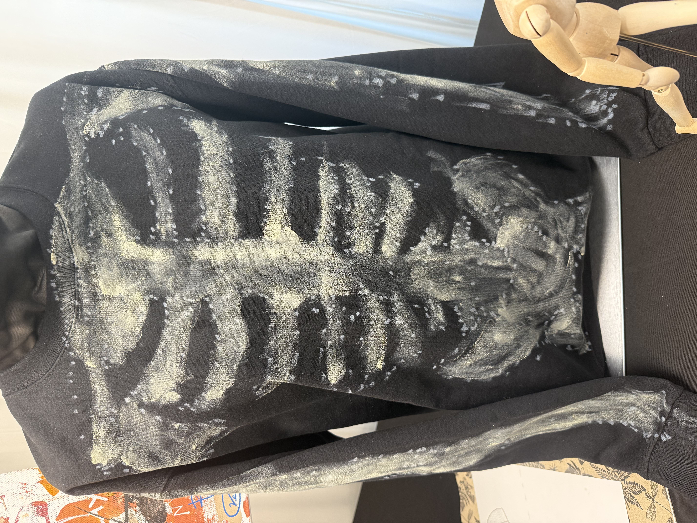

Sweater Piece
The Black Bones Sweater is one of the main pieces in the O’Rineveer collection. It uses a black base with painted bone markings across the chest, creating a dark, skeletal streetwear look.
This piece is meant to look like bones are showing through the sweater. The black fabric creates a shadowy base, while the lighter painted bones make the ribcage design stand out.
The sweater connects to the ideas of structure, decay, and identity. It shows the hidden frame of the body and turns it into a visible fashion design.
This piece gives the collection its darker side. It feels bold, rough, and hand-made, which fits the fall and bone theme of the brand.
← Back to Collection